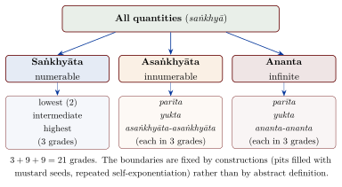

Chapter 10: Mathematics in the Jain Tradition¶
10.1 Mathematics and the Jain Worldview¶
Jain authors took a sustained interest in number, measure and calculation. The interest was not, for the most part, “pure” mathematics in the modern sense. It arose from the needs of a cosmology that describes a vast but measurable universe, from a theory of karma that counts and classifies the kinds and quantities of karmic matter bound to the soul, and from a monastic scholarship that prized exhaustive classification. The result is a body of material, scattered through canonical and post-canonical texts, that historians of mathematics have studied since the early twentieth century (Datta 1929; Plofker 2009).
The main themes of that material are:
-
a classification of quantities into the numerable (saṅkhyāta), the innumerable (asaṅkhyāta) and the infinite (ananta), each with internal grades;
-
very large numbers and time-units, defined by thought-experiments with pits filled with seeds or hairs;
-
operations such as repeated halving (ardhaccheda) and repeated squaring, whose rules resemble those of logarithms and exponents;
-
counting combinations (bhaṅga, vikalpa) of philosophical positions, senses or karmic states;
-
the geometry of circles needed for a cosmos of concentric continents and oceans, using the value \(\pi \approx \sqrt{10}\).
A word of caution is needed at the outset. Popular accounts often claim that Jain texts “anticipated” Cantor’s transfinite numbers, Napier’s logarithms, modern set theory or even the place-value system itself. These claims do not survive a reading of the sources. What the texts contain is interesting enough on its own terms, and this chapter describes it without such comparisons except where a modern analogy is clearly marked as an analogy.
10.2 Sources and Their Dates¶
The relevant material is spread over texts of very different ages. The Śvetāmbara canonical texts were transmitted orally for centuries and received their final redaction at the council of Valabhī in the fifth century CE (Chapter 8); individual passages may be much older, but no part of the canon can be dated securely to a particular century BCE (Dundas 2002). The Digambara works are post-canonical by definition and can be dated somewhat more precisely (Table 10.1).
| Text | Date (approx.) | Mathematical content |
|---|---|---|
| Sthānāṅga (Ṭhāṇaṃga) | canonical; redacted at Valabhī, 5th c. CE | List of ten topics of calculation (saṅkhyāna); numerical classifications |
| Vyākhyāprajñapti (Bhagavatī) | canonical; redacted 5th c. CE | Counting of combinations (bhaṅga) |
| Sūryaprajñapti, Jambūdvīpaprajñapti | canonical; redacted 5th c. CE (older astronomical content) | Calendar astronomy; circle measures with \(\pi\approx\sqrt{10}\) |
| Anuyogadvāra | early centuries CE; redacted 5th c. CE | The 21-fold classification of number; time-units; large numbers |
| Tattvārthādhigama-bhāṣya | c. 4th–5th c. CE (attributed to Umāsvāti) | Rules for chords and arcs of a circle |
| Lokavibhāga (Sanskrit, by Siṃhasūri) | based on a Prakrit original dated 458 CE | Cosmology using place-value word numerals |
| Tiloyapaṇṇatti (Yativṛṣabha) | composite, c. 5th–8th c. CE | Cosmography; measures of the loka; grades of number |
| Dhavalā (Vīrasena) on the Ṣaṭkhaṇḍāgama | completed 816 CE | Rules for ardhaccheda and related operations; large numbers |
| Gommaṭasāra, Trilokasāra (Nemicandra) | c. 10th c. CE | Quantitative karma theory; cosmography |
| Gaṇitasārasaṅgraha (Mahāvīra, the mathematician) | c. 850 CE | General arithmetic, algebra and geometry |
The last entry deserves notice. Mahāvīra (or Mahāvīrācārya), a Digambara Jain who worked at the court of the Rāṣṭrakūṭa king Amoghavarṣa I, wrote the Gaṇitasārasaṅgraha, a comprehensive textbook of arithmetic, algebra and geometry. Unlike the canonical material, it belongs to the mainstream of Indian mathematics and was used well beyond the Jain community (Plofker 2009); a selection of Indian mathematical texts in translation, with commentary, is given in Plofker’s sourcebook chapter (Plofker 2007). Its nine chapters run from terminology and the basic operations through fractions, miscellaneous problems, the rule of three and “mixed” problems (interest, partnership and the like) to plane geometry, excavations and shadows. Among its notable rules are a general rule for the number of combinations of \(n\) things taken \(r\) at a time and the explicit statement that a negative quantity, not being a square, has no square root. Its opening verses praise calculation as necessary to every worldly and religious pursuit, and its problems are often framed with Jain imagery, but its methods are those shared with the astronomer-mathematicians of the period.
10.2.1 The Ten Topics of the Sthānāṅga¶
The Sthānāṅga, which arranges its material in numbered lists from one to ten, includes a list of ten topics of calculation (saṅkhyāna). Datta interpreted them as: fundamental operations (parikamma), determinations or practical problems (vavahāra), geometry (rajju, literally “rope”), mensuration of heaps (rāsi), fractions (kalāsavaṇṇa), simple equations (jāvaṃ tāvaṃ, “as much as”), squares (vagga), cubes (ghaṇa), fourth powers (vaggavagga) and combinations (vikappa) (Datta 1929). The list is terse and its interpretation partly conjectural, but it shows that by the time of the canon’s redaction calculation was recognised as a field with recognised sub-topics.
10.3 The Classification of Number¶
The best-known Jain contribution is a classification of all quantities (saṅkhyā) that appears in the Anuyogadvāra and is elaborated in later Digambara works such as the Tiloyapaṇṇatti and the Dhavalā.
10.3.1 Three Kinds and Twenty-One Grades¶
Quantities are first divided into three kinds:
-
Saṅkhyāta (numerable): finite quantities that can in principle be counted. The lowest is two, since one was not regarded as a “number” in the sense of a counted plurality.
-
Asaṅkhyāta (innumerable): quantities beyond the highest numerable.
-
Ananta (infinite): quantities beyond the highest innumerable.
Each kind is then graded. The numerable has three grades: lowest (jaghanya), intermediate (madhyama) and highest (utkṛṣṭa). The innumerable and the infinite are each divided into three orders — parīta (“limited”), yukta (“joined”) and the “innumerable-innumerable” (asaṅkhyāta-asaṅkhyāta) or “infinite-infinite” (ananta-ananta) — and each order again has a lowest, intermediate and highest grade. The full scheme therefore has \(3 + 9 + 9 = 21\) grades of number (Table 10.2 and Figure 10.1) (Datta 1929; Plofker 2009).
| Kind | Orders | Grades |
|---|---|---|
| Saṅkhyāta (numerable) | — | lowest (two), intermediate, highest: 3 grades |
| Asaṅkhyāta (innumerable) | parīta, yukta, asaṅkhyāta-asaṅkhyāta | each lowest, intermediate, highest: 9 grades |
| Ananta (infinite) | parīta, yukta, ananta-ananta | each lowest, intermediate, highest: 9 grades |
10.3.2 How the Grades Are Defined¶
The boundaries between grades are fixed by constructions rather than by abstract definition. The highest numerable is reached through a famous thought-experiment. One imagines a series of enormous cylindrical pits (palya), each as wide as Jambūdvīpa (100,000 yojanas) and filled with mustard seeds; seeds are dropped one by one into successive continents and oceans, new and larger pits are formed as each is emptied, and further pits keep tally of the operations. The number of seeds involved, less one, is the highest numerable; adding one gives the lowest innumerable. Higher grades are then generated by operations such as raising a quantity to the power of itself.
Two points follow from this. First, saṅkhyāta is finite: it covers every number that can be reached by counting, however large. Second, the lower grades of “innumerable” and even of “infinite” are themselves produced by finite (if enormous) operations on finite quantities. In modern terms they are very large finite numbers to which the tradition assigned a special status, not infinities in the sense of modern set theory. Only the highest grade of the “infinite-infinite” is treated as genuinely unlimited; the Dhavalā associates it with the content of omniscient knowledge (kevala-jñāna).
The categories were put to work in Jain doctrine. The number of space-points (pradeśa) in the inhabited universe (loka) is said to be innumerable; the number of souls, of material atoms and of the moments of time is said to be infinite; the number of souls fit for liberation (bhavya) is infinite, so that the world will never be emptied of souls. These statements are doctrinal claims about the cosmos expressed in the vocabulary of the classification.
Scholarly Note: On comparisons with Cantor
It has often been asserted that the Jain grades of the infinite anticipate Georg Cantor’s transfinite cardinals. The comparison is misleading. Cantor’s achievement was to define infinite sets precisely, to compare their sizes by one-to-one correspondence, and to prove that some infinite sets (such as the real numbers) are strictly larger than others (such as the natural numbers). The Jain texts contain neither the definitions nor the proofs; their “infinite” grades are produced by finite operations and ranked by construction. What they do show is a willingness to reason about quantities beyond counting and to treat “the infinite” as something with internal distinctions — a striking feature of the tradition that can be appreciated without claiming priority over modern mathematics (Plofker 2009).
10.4 Large Numbers and Measures of Time¶
Jain cosmology and karma theory require immense spans of time and space, and the texts provide names for them. The Anuyogadvāra lists time-units that rise by fixed multiples (many by 8,400,000) up to the śīrṣaprahelikā, which on its reckoning is the twenty-eighth power of 8,400,000 — a number of 194 digits. Beyond the countable lie units defined by analogy. A palyopama (“pit-comparison”) is the time needed to empty a pit one yojana across, packed with the finest hairs, if one hair is removed every hundred years; a sāgaropama (“ocean-comparison”) is \(10^{15}\) (ten koṭākoṭi) palyopamas. A complete cycle of cosmic time, made up of a descending and an ascending half (see Chapter 11), lasts twenty koṭākoṭi (that is, \(2\times10^{15}\)) sāgaropamas (Jaini 1979).
Such units are not measurements in any empirical sense. They express the conviction that the cycles of rebirth are, by human standards, practically endless, and they allow the texts to state the life-spans of gods and hell-beings in a fixed vocabulary.
10.4.1 Raising a Number to Its Own Power¶
The Digambara commentaries describe an operation called vargita-saṃvargita, in which a number is raised to the power of itself. Applied to 2, it gives \(2^2 = 4\); applied again, \(4^4 = 256\); applied a third time, \(256^{256}\), a number of more than six hundred digits. The operation is used in constructing the higher grades of the innumerable and the infinite (Datta 1929). It is a vivid illustration of how quickly repeated exponentiation outruns any counting, and it is sometimes compared with modern notations for very fast-growing functions; the comparison is a useful teaching analogy, no more.
10.5 Repeated Halving and Related Operations¶
The Dhavalā and related works use several operations that count how many times a quantity can be reduced in a given way:
- Ardhaccheda (“half-cut”)
- the number of times a quantity can be halved before reaching one. For a power of two, \(2^k\), the ardhaccheda is \(k\).
- Trikaccheda (“third-cut”)
- the number of times a quantity can be divided by three before reaching one.
- Vargaśalākā
- the number of times two must be squared to reach the quantity: for \(2^{2^k}\) it is \(k\).
For powers of two, ardhaccheda behaves exactly like the logarithm to base two, and the texts state rules that correspond to familiar properties: the ardhaccheda of a product equals the sum of the ardhacchedas of the factors, and that of a quotient equals their difference (Plofker 2009). These rules were tools for comparing the enormous quantities of cosmology and karma theory. They were not developed into a general method of computation, as Napier’s logarithms were in the seventeenth century, and there is no historical connection between the two. It is accurate to say that the Jain operations have properties analogous to logarithms; it is not accurate to say that the Jains invented logarithms.
10.6 Combinations¶
Counting arrangements and selections (bhaṅga, vikalpa) was a recurrent Jain concern. The Vyākhyāprajñapti works out, for instance, how many ways a set of philosophical positions or of entities can be taken one, two or three at a time, giving the correct numbers for small sets (Plofker 2009). Later karma theory, as in Nemicandra’s Gommaṭasāra, enumerates the possible combinations of karmic states.
A simple example is found in Jain logic itself. The seven-fold predication (saptabhaṅgī, Chapter 9) is generated from three basic predicates — “is”, “is not” and “is inexpressible” — taken singly, in pairs and all together. There are \(2^3 - 1 = 7\) non-empty selections from three items, which is exactly the number of modes. Whether or not the Jain logicians thought of it in these terms, the structure is combinatorially exact.
General rules for combinations and permutations were later stated by mathematicians outside the Jain tradition as well, notably in prosody (Piṅgala and his commentators) and in the astronomical-mathematical treatises; the Jain material is one strand in this wider Indian interest in combinatorics (Plofker 2009).
10.7 The Geometry of a Circular Cosmos¶
Jain cosmography describes the Middle World (madhya-loka) as a series of concentric ring-shaped continents and oceans surrounding the circular continent of Jambūdvīpa, whose diameter is 100,000 yojanas. Describing such a world required formulas for circles and their segments.
10.7.1 The Value π ≈ √10¶
Jain texts take the circumference of a circle as \(\sqrt{10}\) times its diameter, and its area as one quarter of the circumference multiplied by the diameter:
Applied to Jambūdvīpa, the first formula gives a circumference of about 316,228 yojanas, and the texts state the figure to fractions of a yojana. The value \(\sqrt{10} \approx 3.162\) is less accurate than the \(3.1416\) given by Āryabhaṭa (499 CE), but it was widely used in India and had the advantage of reducing circle calculations to square roots (Plofker 2009).
10.7.2 Chords and Arcs¶
For a segment of a circle of diameter \(d\) cut off by a chord, with height (arrow, iṣu) \(h\), texts associated with the Tattvārthādhigama-bhāṣya give the chord \(c\) and the arc \(a\) as
The first is exact; the second is a serviceable approximation. Such rules allowed the cosmographers to give the dimensions of the bow-shaped regions (kṣetra) into which the mountain ranges divide Jambūdvīpa (Datta 1929).
10.7.3 The Rajju¶
Distances in the universe as a whole are measured in rajju (“rope”), a unit defined in various ways, some of them in terms of innumerable yojanas. The universe (loka) is fourteen rajju high. Its width is seven rajju at the base, narrows to one rajju at the level of the Middle World, widens to five rajju in the upper world and narrows again to one at the top. Digambara texts such as the Tiloyapaṇṇatti compute its volume as 343 cubic rajju (Caillat and Kumar 1981).
10.8 Place-Value Numerals in the Lokavibhāga¶
The Sanskrit Lokavibhāga of Siṃhasūri is a cosmological work that presents itself as a version of a Prakrit original by Sarvanandin, completed on a date equivalent to 458 CE. It expresses numbers with “word-numerals” (bhūta-saṅkhyā) arranged by place value, using a word for “sky” or “void” for zero. If its date is accepted, it is among the earliest datable texts to use decimal place-value with a zero (Plofker 2009). The date has been questioned, and in any case the place-value system was a pan-Indian development whose earliest evidence comes from several sources; the Lokavibhāga is a witness to it, not its origin.
10.9 Mathematics in the Service of Doctrine¶
The Jain material shows mathematics embedded in a religious worldview. Cosmography required the geometry of circles and the arithmetic of very large distances; karma theory, which counts the types, durations and intensities of karmic bonds, required combinatorial reasoning and the comparison of large quantities; and the doctrines of an uncreated universe, an infinite number of souls and omniscient knowledge required a vocabulary for the innumerable and the infinite.
In this respect the Jain tradition resembles the wider Indian tradition, in which gaṇita (calculation) developed in close contact with astronomy, ritual and other disciplines. The Jain contribution is real and distinctive — above all the systematic attention to grades of the innumerable and infinite, and the long tradition of cosmological geometry — and it is best appreciated without the exaggerated claims that have sometimes surrounded it. Its later history, from Mahāvīra’s Gaṇitasārasaṅgraha to the fourteenth-century works of Ṭhakkura Pherū and Mahendra Sūri, is traced in Chapter 12; the wider history of Indian mathematics is the subject of Volume 11 of this series (Gaṇita).
